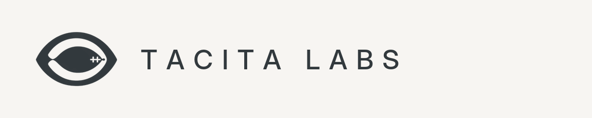

iOS / iPadOS
URLStrip for iOS and iPadOS is currently distributed through Apple's TestFlight beta program. The beta may be full depending on available tester slots.

Download
URLStrip for iOS and iPadOS is available as a public TestFlight beta. Current desktop releases are published through the public URLStrip release repository with direct download links and published SHA-256 hashes so people can verify the integrity of what they've downloaded.
URLStrip for iOS and iPadOS is currently distributed through Apple's TestFlight beta program. The beta may be full depending on available tester slots.
Native macOS desktop build for Apple Silicon and Intel Macs.
Download URLStrip 1.0.2 (Build 15) for macOS
SHA-256: cb5f15d34b4c8e4ce4edf55ab47ea1d0ab62d685fa6758e7c00e0a02be17be2e
Verify:
shasum -a 256 URLStrip-1.0.2-macOS-universal.dmg
Windows desktop release with the same local-cleaning model.
Download URLStrip 1.0.2 (Build 15) for Windows
SHA-256: 0b3e110e4a0d967eddf005e0d60eee97a594d493cb868ceef8966bd680406955
Verify:
certutil -hashfile URLStrip_1.0.2_x64-setup.exe sha256
Want more detail on what the new Monetization Impact and Confidence labels mean? Read how URLStrip classifies tracking.
Beta testing URLStrip? See the tester guide for what to try and what to report.
Full checksum file: checksums/1.0.2.sha256